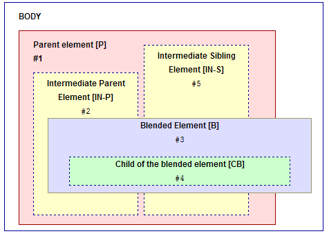

This document is intended to be used as a guideline for the testing activities related to the Compositing and Blending spec [[!compositing-1]]. Its main goal is to provide an overview of the general testing areas and an informative description of possible test cases.
This document is not meant to replace the spec in determining the normative and non-normative assertions to be tested, but rather complement it.
In order to increase the quality of the test contributions, this document offers a set of test cases description for conducting testing (see ).
In terms of actual tests produced for the CSS Compositing and Blending, the main goal
is to ensure that most tests are automatable (i.e. they're either
reftests or use testharness.js). Even where manual tests
are absolutely necessary they should be written so that they can be
easily automated – as there are on-going efforts to make
WebDriver [[webdriver]] automated tests a first class citizen in W3C
testing. This means that even if a manual test requires user
interaction, the validation or PASS/FAIL conditions should still be
clear enough as to allow automatic validation if said interaction is
later automated.
Since CSS blending has only three new CSS properties, the approach is to deep dive into every aspect of the spec as much as possible. Tests will be created for the testing areas listed in and having as guidance the test cases description from .
These testing areas cover things explicitly defined in the normative sections of the Blending and Compositing spec. Please note that while detailed, this list is not necessarily exhaustive and some normative behaviors may not be contained in it. When in doubt, consult the Blending and Compositing spec or ask a question on the mailing list.
Below is the list of explicit testing areas:
mix-blend-modeisolationbackground-blend-modeThese are testing areas either normatively defined in other specs that explicitly refer to the Blending and Compositing spec (e.g. [[!css3-transforms]]) or simply not explicitly defined, but implied by various aspects of the spec (e.g. processing model, CSS 2.1 compliance, etc.). Please note that while detailed, this list is not necessarily exhaustive and some normative behaviors may not be contained in it. When in doubt, consult the Blending and Compositing spec or ask a question on the mailing list.
Below is the list of implicit testing areas:
<video><canvas><table>transformstransitions animations mix-blend-modeThe following diagram describes a list of notations to be used later on in the document as well as the general document structure the test cases will follow. The test cases should not be limited to this structure. This should be a wireframe and people are encouraged to come up with complex test cases.

The intended structure of the document is the following:
<body>
<div id="[P]">
<div id="[IN-P]">
<div id="[B]">
<div id="[CB]"></div>
</div>
</div>
<div id="[IN-S]"></div>
</body>
The CSS associated to the elements used in the tests shouldn't use properties that creates a stacking context, except the ones specified in the test case descriptions.
Every test case has a description of the elements used. The notation from the image is used in the test case description too (e.g. for parent element the notation is [P])
mix-blend-mode other than normal creates a stacking contextTest the following assumption from the spec: "Applying a blendmode other than ‘normal’ to the element must establish a new stacking context [CSS21]. "
| Test case | Test data | Expected result |
|---|---|---|
Simple <div> |
2 elements required: [P] and [B] [P] - Parent <div> element with background-color other than transparent. [B] - Child <div> element with mix-blend-mode other than normal.
|
The child <div> [B] creates a stacking context. The colors of the <div> elements ( [B] and [P] ) are mixed. |
mix-blend-mode blends with the context within the current stacking contextPartially??? test the following assumption from the spec:
"An element that has blending applied, must blend with all the underlying content of the stacking context [CSS21] that that element belongs to."
| Parent position:fixed | 2 elements required: [P] and [B] [P] - Parent element that creates a stacking context (e.g. position:fixed) [B] - Child element mix-blend-mode other than normal. |
The color of the parent element [P] mixes with the color of the child element [B]. |
Parent <video> |
2 elements required: [P] and [IN-S] [P] - <video> element [IN-S] - Sibling element with mix-blend-mode and some text The [IN-S] element overlaps the video element
|
The color of the video element [P] mixes with the color of the sibling element and the text [IN-S]. |
| Sibling between the parent and the blended element | 3 elements required: [P], [B] and [IN-S] [P] - Parent element that creates a stacking context (e.g. position:fixed) [B] - Child element mix-blend-mode other than normal.
[IN-S] - Sibling element between the parent [P] and child [B]
|
??? The colors of the parent element [P] and the sibling element [IN-S] mixes with the color of the blended element [B]. |
| Intermediate child between the parent and the blended element | 3 elements required: [P], [B] and [IN-P] [P] - Parent element that creates a stacking context (e.g. position:fixed) [IN-P] - Intermediate child element between the parent [P] and the child [B]. [B] - Child element of the [IN-P] with mix-blend-mode other than normal.
|
??? The colors of the parent element [P] and the child element [IN-P] mixes with the color of the blended element [B]. |
mix-blend-mode doesn't blend with anything outside the current stacking contextPartially??? test the following assumption from the spec:
"An element that has blending applied, must blend with all the underlying content of the stacking context [CSS21] that that element belongs to."
| Test case | Test data | Expected result |
|---|---|---|
| Blending child overflows the parent | 2 elements required: [P] and [B] [P] - Parent element with position:fixed (or other property that creates a stacking context). [B] - Child element with mix-blend-mode other than normal.The child element has content that lies outside the parent element. Set the background-color of the BODY to a specific value. |
The color of the parent element mixes with the color of the child element. The area of the child element outside of the parent element doesn't mix with the color of the BODY |
| Parent with transparent pixels | 2 elements required: [P] and [B] [P] - Parent element with some text inside and position:fixed. No value specified for the background-color [B] - Child element with mix-blend-mode other than normal. Set the background-color of the BODY to a specific value. |
The color of the text from the parent element [P] mixes with the color of the child element [B]. No blending between the color of the BODY and the color of the child element [B] |
Parent with border-radius |
2 elements required: [P] and [B] [P] - Parent element with position:fixed (or other property that creates a stacking context) and border-radius specified (e.g.50%). [B] - Child element with mix-blend-mode other than normal.The child element has content that lies outside the parent element, over a rounded corner. Set the background-color of the BODY to a specific value. |
The color of the parent element mixes with the color of the child element. The area of the child element which draws over the rounded corner doesn't mix with the color of the BODY |
mix-blend-mode other than normal must cause a group to be isolatedTest the following assumption from the spec:
operations that cause the creation of stacking context [CSS21] must cause a group to be isolated.
| Test case | Test data | Expected result |
|---|---|---|
| Child of the blended element has opacity | 3 elements required: [P], [B] and [CB] [P] - Parent element that creates a stacking context(e.g. position:fixed) [B] - Child element with mix-blend-mode other than normal. [CB] - Child element with opacity less than one. |
The group created by the two child elements([B] and [CB]) is blended with the parent element [P]. (No blending between [B] and [CB]) |
| Overflowed child of the blended element | 3 elements required: [P], [B] and [CB] [P] - Parent element with a property that creates a stacking context(e.g. position:fixed) [B] - Child element with mix-blend-mode other than normal. [CB] - Child of the blended element has content that lies outside the parent element [B]. |
The group created by the two child elements([B] and [CB]) is blended with the parent element [P]. (No blending between [B] and [CB]). There is only one color for the entire element [CB] |
| Blended element with transparent pixels | 3 elements required: [P], [B] and [CB] [P] - Parent element with a property that creates a stacking context(e.g. position:fixed) [B] - Child element with mix-blend-mode other than normal. [CB] - Child of the blended element. |
The group created by the two child elements([B] and [CB]) is blended with the parent element [P]. (No blending between [B] and [CB]). |
mix-blend-mode must work properly with css transforms| Test case | Test data | Expected result |
|---|---|---|
| Parent with 3D transform | 2 elements required: [P] and [B] [P] - Parent element with 3D transform. [B] - Child element mix-blend-mode other than normal. |
The color of the parent element [P] mixes with the color of the child element [B] |
| Blended element with 3D transform | 2 elements required: [P], [B] and [CB] [P] - Parent element that creates a stacking context(e.g. position:fixed) [B] - Child element with mix-blend-mode other than normal and 3D transform |
The color of the parent element [P] mixes with the color of the child element [B] |
| Both parent and blended element with 3D transform | 2 elements required: [P] and [B] [P] - Parent element with 3D transform. [B] - Child element with mix-blend-mode other than normal and 3D transform. |
The color of the parent element [P] mixes with the color of the child element [B] |
| Blended element with transform and preserve-3d | 3 elements required: [P], [B] and [CB] [P] - Parent element that creates a stacking context(e.g. position:fixed) [B] - Child element with mix-blend-mode other than normal and transform with transform-style:preserve-3d [CB] - Child element - with 3D transform |
The child element [CB] will NOT preserve its 3D position. mix-blend-mode override the behavior of transform-style:preserve-3d:
creates a flattened representation of the descendant elements [Check this] The color of the group created by the child elements([B] and [CB]) will blend with the color of the parent element [P] |
| Blended element with transform and perspective | 2 elements required: [P] and [B] [P] - Parent element with position:absolute,
background-color other than transparent [B] - Child element with mix-blend-mode other than normal
and transform with perspective set to positive length |
[Check] The colors of the parent and the child are mixed ([P] and [B]) |
| Sibling with 3D transform between the parent and the blended element | 3 elements required: [P], [B] and [IN-S] [P] - Parent element that creates a stacking context (e.g. position:fixed) [B] - Child element mix-blend-mode other than normal.
[IN-S] - Sibling element with 3D transform between the parent [P] and the child [B]
|
??? The colors of the parent element [P] and the transformed sibling element [IN-S] mixes with the color of the blended element [B]. ?? |
| Parent with 3D transform and transition | 2 elements required: [P] and [B] [P] - Parent element with 3D transform and transition. [B] - Child element mix-blend-mode other than normal. |
The color of the parent element [P] mixes with the color of the child element [B] |
| Sibling with 3D transform and transition between the parent and the blended element | 3 elements required: [P], [B] and [IN-S] [P] - Parent element that creates a stacking context (e.g. position:fixed) [B] - Child element mix-blend-mode other than normal.
[IN-S] - Sibling element with 3D transform and transition between the parent [P] and the child [B]
|
??? The colors of the parent element [P] and the transformed sibling element [IN-S] mixes with the color of the blended element [B]. ?? |
mix-blend-mode must work properly with elements with overflow propertyParent element with overflow:scroll |
2 elements required: [P] and [B] [P] - Parent element with overflow:scroll. [B] - Child element mix-blend-mode other than normal. |
The color of the parent element [P] mixes with the color of the child element [B] [??? What's hapening on the scrolling area] |
Blended element with overflow:scroll |
2 elements required: [P] and [B] [P] - Parent elementwith a property that creates stacking context. [B] - Child element mix-blend-mode other than normal and overflow:scroll. |
The color of the parent element [P] mixes with the color of the child element [B] [??? What's hapening on the scrolling area] |
Parent element with overflow:scroll and blended with position:fixed |
2 elements required: [P] and [B] [P] - Parent element with overflow:scroll. [B] - Child element mix-blend-mode other than normal and position:fixed. |
The color of the parent element [P] mixes with the color of the child element [B] The blending happens when scrolling the content of the parent element [P] too. [??? What's hapening on the scrolling area] |
Parent with overflow:hidden and border-radius |
2 elements required: [P] and [B] [P] - Parent element with a property that creates a stacking context, overflow:hidden and border-radius specified (e.g.50%). [B] - Child element with mix-blend-mode other than normal.The child element has content that lies outside the parent element, over a rounded corner. Set the background-color of the BODY to a specific value. |
The color of the parent element mixes with the color of the child element. The area of the child element which draws over the rounded corner doesn't mix with the color of the BODY |
Blended element with overflow:hidden and border-radius |
3 elements required: [P] and [B] [P] - Parent element with a property that creates a stacking context. [B] - Child element with mix-blend-mode other than normal, overflow:hidden and border-radius specified (e.g.50%). [CB] - Child element with content that lies outside the parent element, over a rounded corner. Set the background-color of the BODY to a specific value. |
The group created by the two child elements([B] and [CB]) is blended with the parent element [P]. (No blending between [B] and [CB]) |
Intermediate child with overflow:hidden and border-radius between the parent and the blended element |
3 elements required: [P], [B] and [IN-P] [P] - Parent element that creates a stacking context (e.g. position:fixed) [IN-P] - Intermediate child element between the parent [P] and the child [B] [IN-P] - has overflow:hidden and border-radius specified (e.g.50%).
[B] - Child element of the [IN-P] with mix-blend-mode other than normal.
|
??? The colors of the parent element [P] and the child element [IN-P] mixes with the color of the blended element [B]. |
| Border-image | 2 elements required: [P] and [B] [P] - Parent element with position:relative, background-color other than transparent[B] - Child element with mix-blend-mode other than normal and border-image specified as an png file.
|
The color of the parent element [P] mixes with the color of the child element. The color of the border-image mixes with the color of the parent element [P].
|
Parent cavas |
2 elements required: [P] and [IN-S] [P] - canvas element [IN-S] - Sibling element with mix-blend-mode and some text The [IN-S] element overlaps the canvas element
|
The color of the canvas element [P] mixes with the color of the sibling element and the text [IN-S]. |
Blended cavas |
2 elements required: [P] and [B] [P] - Parent element with a property that creates a stacking context [B] - Child canvas element with mix-blend-mode other than normal
|
The color of the canvas element [B] mixes with the color of the parent element [P] . |
Blended <video> |
2 elements required: [P] and [B] [P] - Parent element with a property that creates a stacking context [B] - Child <video> element with mix-blend-mode other than normal
|
The color of the <video> element [B] mixes with the color of the parent element [P] . |
Parent <iframe> |
2 elements required: [P] and [IN-S] [P] - <iframe> element [IN-S] - Sibling element with mix-blend-mode and some text The [IN-S] element overlaps the <iframe> element
|
The color of the <iframe> element [P] mixes with the color of the sibling element and the text [IN-S]. |
Blended <iframe> |
2 elements required: [P] and [B] [P] - Parent element with a property that creates a stacking context. [B] - Child <iframe> element with mix-blend-mode other than normal
|
The color of the <iframe> element [B] mixes with the color of the parent element [P]. |
Blended element with mask property |
2 elements required: [P] and [B] [P] - Parent element with a property that creates a stacking context. [B] - Child element with mix-blend-mode other than normal
and mask specified to an SVG image (e.g. circle) |
The colors of the parent and the masked child are mixed ([P] and [B]) |
Blended element with clip-path property |
2 elements required: [P] and [B] [P] - Parent element [B] - Child element with mix-blend-mode other than normal
and clip-path property specified to a basic shape (e.g. ellipse) |
The colors of the parent and the clipped child are mixed ([P] and [B]) |
Blended element with filter property |
2 elements required: [P] and [B] [P] - Parent element [B] - Child element with mix-blend-mode other than normal
and filter property value other than none |
The filter is applied and the result is mixed with the parent element |
Blended element with transition |
2 elements required: [P] and [B] [P] - Parent element [B] - Child element with mix-blend-mode other than normal
and transition-property for opacity |
The transition is applied and the result is mixed with the parent element |
Blended element with animation |
2 elements required: [P] and [B] [P] - Parent element [B] - Child element with mix-blend-mode other than normal
and an animation specified |
The animation is applied to the child element and the result is mixed with the parent element |
| Image element | 2 elements required: [P] and [B] [P] - Parent <div> element with background-color other than transparent. [B] - Child <img> element (.jpeg or .gif image) with mix-blend-mode other than normal. |
The color of the <img> is mixed with the color of the <div>. |
| SVG element | 2 elements required: [P] and [B] [P] - Parent <div> with background-color other than transparent.[B] - Child SVG element with mix-blend-mode other than normal. |
The color of the SVG is mixed with the color of the <div>. |
| Paragraph element | 2 elements required: [P] and [B] [P] - Parent <div> element with background-color other than transparent.[B] - Child paragraph element with mix-blend-mode other than normal. |
The color of the text from the paragraph element is mixed with the color of the <div> |
| Paragraph element and background-image | 2 elements required: [P] and [B] [P] - Parent <div> element with background-image [B] - Child p element with mix-blend-mode other than normal. |
The color of the text from the p element is mixed with the background image of the <div> |
| Set blending from JavaScript | 2 elements required: [P] and [B] [P] - Parent <div> element with background-color other than transparent. [B] - Child <div> element From JavaScript, set the mix-blend-mode property for the child <div> [B] to a value other than normal. |
The colors of the <div> elements are mixed. |
| Set blending and opacity from JavaScript | 2 elements required: [P] and [B] [P] - Parent <div> element with background-color other than transparent. [B] - Child <div> elementFrom JavaScript, set the mix-blend-mode property for the child <div> [B] to a value other than normal and opacity to less than one. |
The colors of the <div> elements are mixed. |